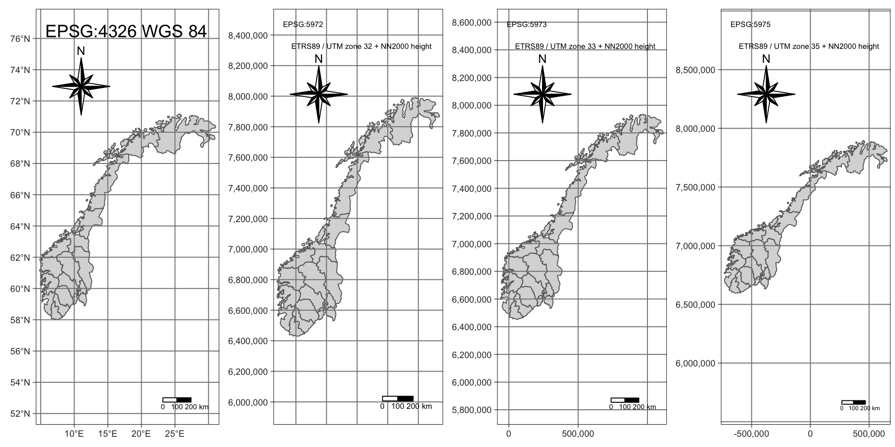
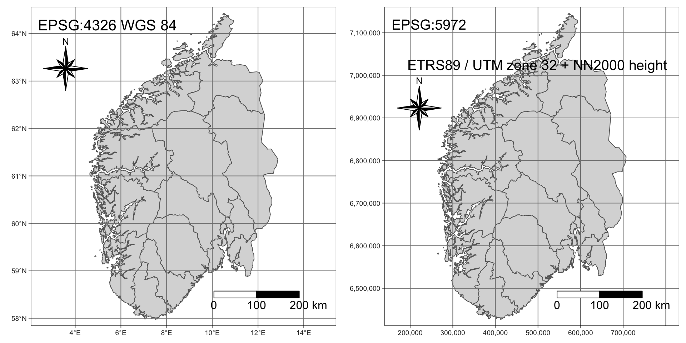
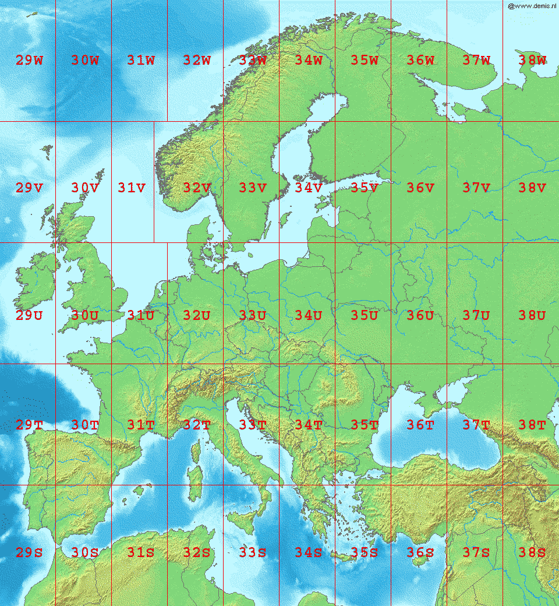
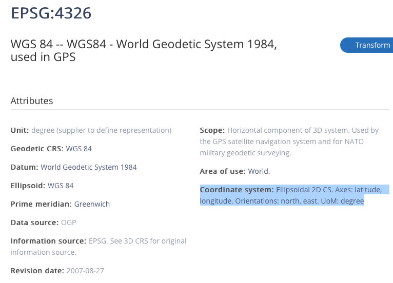
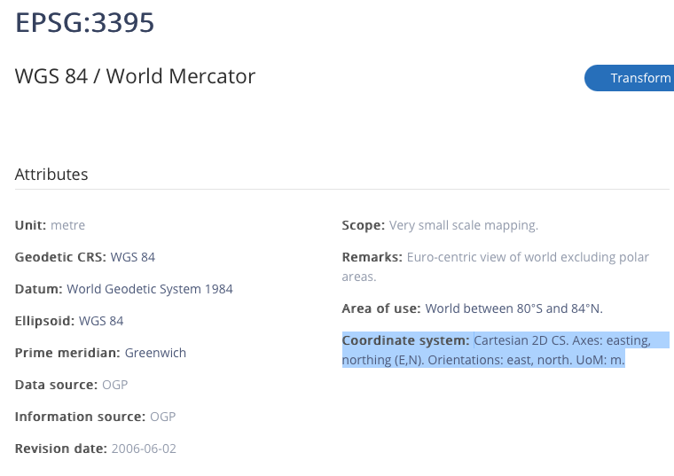
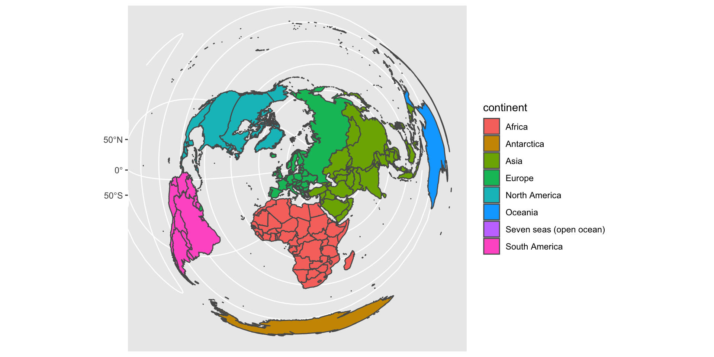
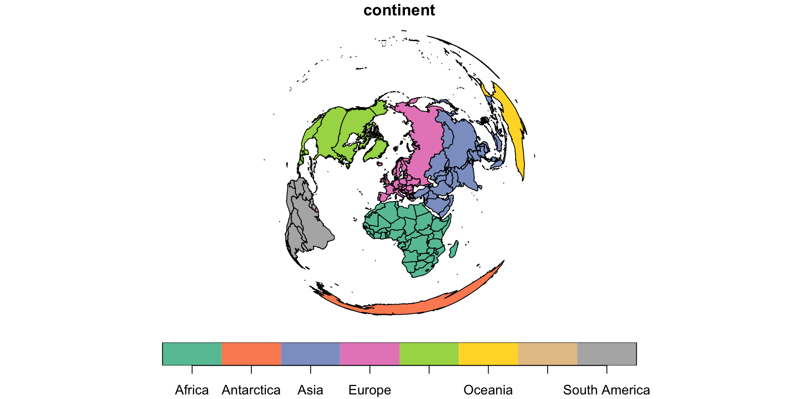
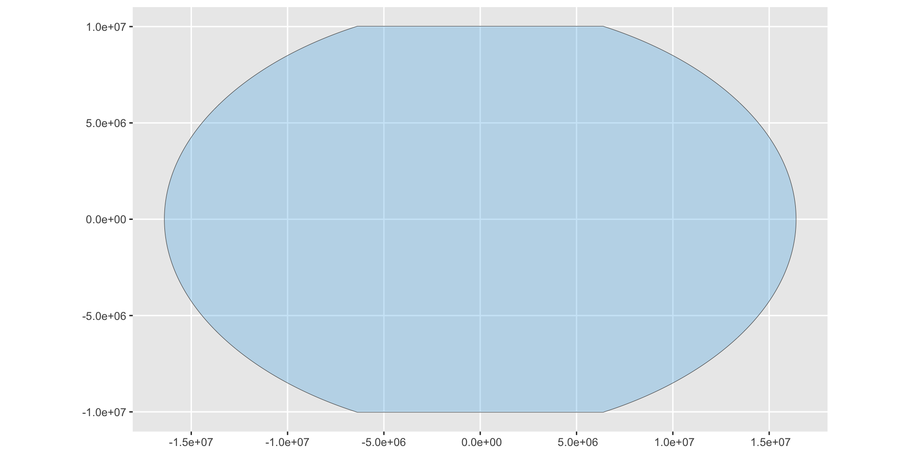
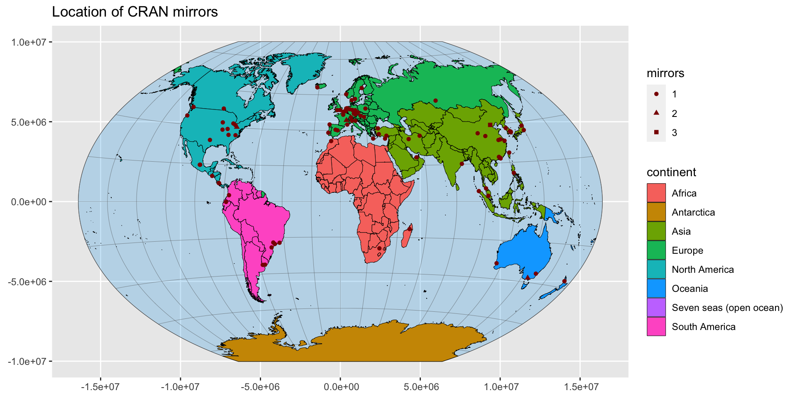

Maps and Projections 2
Projections
Arnstein Gjestland
HVL
Spring 2021 (revised autumn 2022)
Standard projections for Norway
Standard projections for Norway
EUREF89 UTM (Universal Transversal Mercator-projeksjon) er i løpet av 1. halvår 2009 innført som offisielt datum og projeksjon i alle landets kommuner. Innføringen av EUREF89 har gitt oss et moderne, homogent og nøyaktig geodetisk grunnlag som for de fleste praktiske formål kan ansees som feilfritt. (Kilde: https://www.kartverket.no/globalassets/til-lands/euref89_ntm_beskrivelse.pdf)
Standard projections for Norway cont.
- EPSG:5972 ETRS89 / UTM zone 32 + NN2000 height (Sør Norge, Norway - onshore - between 6°E and 12°E.)
- EPSG:5973 ETRS89 / UTM zone 33 + NN2000 height (East Hedemark, Trøndelag-Troms, Norway - onshore - between 12°E and 18°E.)
- EPSG:5975 ETRS89 / UTM zone 35 + NN2000 height (Finnmark, Norway - onshore - between 24°E and 30°E.)
- EUREF89 er det offisielle geodetiske datumet i Norge. Internasjonalt brukes navnet European Terrestrial Reference System 1989 (ETRS89) om samme datum. (Kilde: https://no.wikipedia.org/wiki/EUREF89)
- ED50: ED50 er ei regional referanseramme (geodetisk datum) som dekker Europa. ED50 har vore tilgjengeleg sidan 1950, og Noregs hovudkartserie i målestokk 1 : 50000, N50 (tidlegare M711) brukte tidlegare denne referanseramma. No blir N50-serien gjeven ut med referanseramme EUREF89. (Kilde: https://www.kartverket.no/til-lands/posisjon/referanserammer-for-noreg)
Standard projections for Norway cont.
- NN2000, vertikalt datum, offisielt høydesystem for Norge, Sverige og Finland. I nyere kart og publikasjoner er høyde over havet oppgitt i NN2000.Også kjent som normalnull 2000. (Kilde:https://snl.no/NN2000)
- Geoide er det teoretiske nivået havoverflaten ville ligget på hvis vi trekker fra effekter av tidevann, havstrømmer og bølger. Geoiden påvirkes av jordas gravitasjonsfelt, og dette er ikke det samme over alt. Geoiden er et viktig utgangspunkt for høydemålinger. (Kilde: https://snl.no/geoide)
- Et horisontalt datum inneholder parametre (størrelse og flattrykning) for en jordellipsoide og dens plassering i forhold til jordkroppen. Det punktet som forankrer koordinatsystemet til jordkroppen kalles fundamentalpunktet. (Kilde:https://snl.no/geodetisk_datum)
Previous Norwegian “standards”
Ask rgdal.
Previous Norwegian “standards” cont.
code note
1 4273 NGO 1948
2 4817 NGO 1948 (Oslo)
3 27391 NGO 1948 (Oslo) / NGO zone I
4 27392 NGO 1948 (Oslo) / NGO zone II
5 27393 NGO 1948 (Oslo) / NGO zone III
6 27394 NGO 1948 (Oslo) / NGO zone IV
7 27395 NGO 1948 (Oslo) / NGO zone V
8 27396 NGO 1948 (Oslo) / NGO zone VI
9 27397 NGO 1948 (Oslo) / NGO zone VII
10 27398 NGO 1948 (Oslo) / NGO zone VIIIPrevious Norwegian “standards” cont.
prj4
1 +proj=longlat +a=6377492.018 +rf=299.1528128 +no_defs +type=crs
2 +proj=longlat +a=6377492.018 +rf=299.1528128 +pm=oslo +no_defs +type=crs
3 +proj=tmerc +lat_0=58 +lon_0=-4.66666666666667 +k=1 +x_0=0 +y_0=0 +a=6377492.018 +rf=299.1528128 +pm=oslo +units=m +no_defs +type=crs
4 +proj=tmerc +lat_0=58 +lon_0=-2.33333333333333 +k=1 +x_0=0 +y_0=0 +a=6377492.018 +rf=299.1528128 +pm=oslo +units=m +no_defs +type=crs
5 +proj=tmerc +lat_0=58 +lon_0=0 +k=1 +x_0=0 +y_0=0 +a=6377492.018 +rf=299.1528128 +pm=oslo +units=m +no_defs +type=crs
6 +proj=tmerc +lat_0=58 +lon_0=2.5 +k=1 +x_0=0 +y_0=0 +a=6377492.018 +rf=299.1528128 +pm=oslo +units=m +no_defs +type=crs
7 +proj=tmerc +lat_0=58 +lon_0=6.16666666666667 +k=1 +x_0=0 +y_0=0 +a=6377492.018 +rf=299.1528128 +pm=oslo +units=m +no_defs +type=crs
8 +proj=tmerc +lat_0=58 +lon_0=10.1666666666667 +k=1 +x_0=0 +y_0=0 +a=6377492.018 +rf=299.1528128 +pm=oslo +units=m +no_defs +type=crs
9 +proj=tmerc +lat_0=58 +lon_0=14.1666666666667 +k=1 +x_0=0 +y_0=0 +a=6377492.018 +rf=299.1528128 +pm=oslo +units=m +no_defs +type=crs
10 +proj=tmerc +lat_0=58 +lon_0=18.3333333333333 +k=1 +x_0=0 +y_0=0 +a=6377492.018 +rf=299.1528128 +pm=oslo +units=m +no_defs +type=crsPrevious Norwegian “standards” cont.
code prj_method
1 4273 (null)
2 4817 (null)
3 27391 Transverse Mercator
4 27392 Transverse Mercator
5 27393 Transverse Mercator
6 27394 Transverse Mercator
7 27395 Transverse Mercator
8 27396 Transverse Mercator
9 27397 Transverse Mercator
10 27398 Transverse MercatorPrevious Norwegian “standards” cont.
- NGO1948 er et nasjonalt norsk geodetisk datum og koordinatsystem, som ble brukt fram til 2009.Fundamentalpunktet er i Observatoriet i Oslo.
- For NGO-48 er det Oslo gamle observatorium som er 0. (http://www.milvang.no/gps/gpsconv/gpsconv.html).
- Virker som det er litt forvirring rundt dette, SNL viser til Oslo solobservatorium som fundamentalpunktet.
Simplify
Projected
Same map with tmap
- Perhaps easier with tmap
UTM (fra wikipedia.org)
Note! 31V, 32V, 31X, 33C, 35X og 37X
Else 6° wide, 8° high
The scale factor at the central meridian is specified to be 0.9996 of true scale
The Mercator projection is conformal, which means it preserves angles and therefore shapes across small regions. However, it distorts distance and area.
Covers 80°S to 84°N
UTM (fra wikipedia.org) cont.
- Latitude bands not strictly part of UTM
- runs from C to X (excluding I and O)
- A, B Antarctica and Y, Z Arctic
- Vertical axes, meters from equator
- Horizontal axes
- Mid Meridian of a zone at 500.000
- 498.500 means 1.500 meters west of center meridian of zone
- 507.036 means 7036 meters east of center meridian of zone
- if both obs. on same latitude the distance between them is 507.036 - 498.500 = 8526 meters
- if not same latitude, use pytagoras
- Note! Horizontal axis neither starts at 0 nor ends at 1.000.000
Norske fylker long/lat 4326 and projected
Code
p2 <- Norge_fylke %>%
select(fnr) %>%
st_transform(5972) %>%
tm_shape() +
tm_fill() +
tm_grid() +
tm_borders() +
tm_layout(
title = "EPSG:5972\n
ETRS89 / UTM zone 32 + NN2000 height",
scale = 1
) +
tm_compass(
type = "8star",
position = c("left", "top")
) +
tm_scale_bar(
breaks = c(0, 100, 200),
text.size = 1
)Norske fylker long/lat WGS 84 EPSG 4326 cont.
Code
p3 <- Norge_fylke %>%
select(fnr) %>%
st_transform(5973) %>%
tm_shape() +
tm_fill() +
tm_grid() +
tm_borders() +
tm_layout(
title = "EPSG:5973\n
ETRS89 / UTM zone 33 + NN2000 height"
) +
tm_compass(
type = "8star",
position = c("left", "top")
) +
tm_scale_bar(
breaks = c(0, 100, 200),
text.size = 1
)Code
p4 <- Norge_fylke %>%
select(fnr) %>%
st_transform(5975) %>%
tm_shape() +
tm_fill() +
tm_grid() +
tm_borders() +
tm_layout(
title = "EPSG:5975\n
ETRS89 / UTM zone 35 + NN2000 height"
) +
tm_compass(
type = "8star",
position = c("left", "top")) +
tm_scale_bar(
breaks = c(0, 100, 200),
text.size = 1
)Result
Southern Norway
Code
# query="SELECT * FROM Norge_fylke WHERE navn
# IN ('Østfold', 'Akershus', 'Oslo', 'Hedmark', 'Oppland',
# 'Buskerud', 'Vestfold', 'Telemark', 'Aust-Agder',
# 'Vest-Agder', 'Rogaland', 'Hordaland', 'Sogn og Fjordane',
# 'Møre og Romsdal', 'Sør-Trøndelag')")
# OR
Norge_fylke_syd <- read_sf(
"Norge_fylke.gpkg",
query = "SELECT * FROM Norge_fylke WHERE navn
NOT IN ('Nord-Trøndelag', 'Nordland',
'Troms', 'Finnmark')") %>%
#check size
ms_simplify(
keep = 0.01,
keep_shapes = TRUE
)Code
p6 <- Norge_fylke_syd %>%
select(fnr) %>%
st_transform(5972) %>%
tm_shape() +
tm_fill() +
tm_borders() +
tm_layout(
title = "EPSG:5972\n
ETRS89 / UTM zone 32 + NN2000 height",
scale = 1
) +
tm_grid() +
tm_compass(
type = "8star",
position = c("left", "top")
) +
tm_scale_bar(
breaks = c(0, 100, 200),
text.size = 1
)Result
Result cont.
UTM
North: Meters from equator
East: Offset from the zone central meridian (set at 500000).
- Width is 6° longitude. UTM eastings range from about 167000 meters to 833000 meters at the equator (wikipedia.org).
One exception zone UTM 32V is 9° longitude wide and UTM 31V is 3°.
UTM Europe map
UTM Europe (in Public Domain, taken from wikipedia).
Calculations Rogaland
- NB! We MUST use projected map for area calculations.
Calculations Sør-Norge
Calculations Sør-Norge
Simple feature collection with 15 features and 3 fields
Geometry type: MULTIPOLYGON
Dimension: XY
Bounding box: xmin: 264035 ymin: 6426820 xmax: 706922.6 ymax: 7145715
Projected CRS: ETRS89 / UTM zone 32N + NN2000 height
# A tibble: 15 × 4
fnr navn geom area
* <dbl> <chr> <MULTIPOLYGON [m]> [m^2]
1 1 Østfold (((595487.4 6595761, 596740.2 6595909, 597095… 4.12e 9
2 2 Akershus (((595487.4 6595761, 595029.5 6598461, 593972… 4.92e 9
3 3 Oslo (((589437.3 6649902, 588515.7 6650396, 586785… 4.55e 8
4 4 Hedmark (((659121.9 6637088, 658791.5 6637252, 658790… 2.74e10
5 5 Oppland (((413559.5 6876136, 413808.8 6878535, 413293… 2.52e10
6 6 Buskerud (((574300.1 6617769, 573398.3 6615185, 571043… 1.49e10
7 7 Vestfold (((586629.8 6583984, 587328 6584084, 587442.4… 2.18e 9
8 8 Telemark (((542483.3 6544783, 543936.8 6543814, 543438… 1.53e10
9 9 Aust-Agder (((505409 6510821, 505917.8 6511466, 509148.3… 9.13e 9
10 10 Vest-Agder (((439175.4 6437828, 440373 6438453, 440749.6… 7.27e 9
11 11 Rogaland (((350155.9 6464135, 347181.1 6463086, 346582… 9.35e 9
12 12 Hordaland (((293745.5 6685230, 293180.5 6684306, 291731… 1.54e10
13 14 Sogn og Fjordane (((278642.1 6838708, 277240 6839339, 277530.6… 1.87e10
14 15 Møre og Romsdal (((407878.4 6954314, 409132.4 6954983, 410557… 1.51e10
15 16 Sør-Trøndelag (((668566.5 6915299, 667158 6914854, 666246.7… 1.87e10Calculations Sør-Norge (km^2)
Calculations Sør-Norge (km^2)
Simple feature collection with 15 features and 3 fields
Geometry type: MULTIPOLYGON
Dimension: XY
Bounding box: xmin: 264035 ymin: 6426820 xmax: 706922.6 ymax: 7145715
Projected CRS: ETRS89 / UTM zone 32N + NN2000 height
# A tibble: 15 × 4
fnr navn geom area_…¹
* <dbl> <chr> <MULTIPOLYGON [m]> [km^2]
1 1 Østfold (((595487.4 6595761, 596740.2 6595909, 597095… 4117.
2 2 Akershus (((595487.4 6595761, 595029.5 6598461, 593972… 4915.
3 3 Oslo (((589437.3 6649902, 588515.7 6650396, 586785… 455.
4 4 Hedmark (((659121.9 6637088, 658791.5 6637252, 658790… 27391.
5 5 Oppland (((413559.5 6876136, 413808.8 6878535, 413293… 25170.
6 6 Buskerud (((574300.1 6617769, 573398.3 6615185, 571043… 14898.
7 7 Vestfold (((586629.8 6583984, 587328 6584084, 587442.4… 2181.
8 8 Telemark (((542483.3 6544783, 543936.8 6543814, 543438… 15282.
9 9 Aust-Agder (((505409 6510821, 505917.8 6511466, 509148.3… 9135.
10 10 Vest-Agder (((439175.4 6437828, 440373 6438453, 440749.6… 7273.
11 11 Rogaland (((350155.9 6464135, 347181.1 6463086, 346582… 9353.
12 12 Hordaland (((293745.5 6685230, 293180.5 6684306, 291731… 15429.
13 14 Sogn og Fjordane (((278642.1 6838708, 277240 6839339, 277530.6… 18665.
14 15 Møre og Romsdal (((407878.4 6954314, 409132.4 6954983, 410557… 15117.
15 16 Sør-Trøndelag (((668566.5 6915299, 667158 6914854, 666246.7… 18737.
# … with abbreviated variable name ¹area_km2Conclusion
Norway:
- Use EPSG:4326 (latitude/longitude or longitude/latitude ) for geographical coordinates.
or
EPSG:5973 for projected (whole of Norway)
EPSG:5972 for Southern Norway
Unit is meters.
To measure distance or area the map HAS to be projected.
Different projections
The longitude latitude problem
- Geographers prefer latitude first, longitude second
- Data scientists and GIS programmer often use longitude first, latitude second
- For some projections the axis order is not specified
- For some projections the axis order is specified, but often ignored in software
- This will give us a lot of problems
Axis order EPSG:4326
EPSG:4326
- The authorities say latitude first, longitude second
Axis order
- Obey the authorities
The crs of world_ne
Coordinate Reference System:
User input: +proj=longlat +datum=WGS84 +no_defs +ellps=WGS84 +towgs84=0,0,0
wkt:
BOUNDCRS[
SOURCECRS[
GEOGCRS["unknown",
DATUM["World Geodetic System 1984",
ELLIPSOID["WGS 84",6378137,298.257223563,
LENGTHUNIT["metre",1]],
ID["EPSG",6326]],
PRIMEM["Greenwich",0,
ANGLEUNIT["degree",0.0174532925199433],
ID["EPSG",8901]],
CS[ellipsoidal,2],
AXIS["longitude",east,
ORDER[1],
ANGLEUNIT["degree",0.0174532925199433,
ID["EPSG",9122]]],
AXIS["latitude",north,
ORDER[2],
ANGLEUNIT["degree",0.0174532925199433,
ID["EPSG",9122]]]]],
TARGETCRS[
GEOGCRS["WGS 84",
DATUM["World Geodetic System 1984",
ELLIPSOID["WGS 84",6378137,298.257223563,
LENGTHUNIT["metre",1]]],
PRIMEM["Greenwich",0,
ANGLEUNIT["degree",0.0174532925199433]],
CS[ellipsoidal,2],
AXIS["latitude",north,
ORDER[1],
ANGLEUNIT["degree",0.0174532925199433]],
AXIS["longitude",east,
ORDER[2],
ANGLEUNIT["degree",0.0174532925199433]],
ID["EPSG",4326]]],
ABRIDGEDTRANSFORMATION["Transformation from unknown to WGS84",
METHOD["Geocentric translations (geog2D domain)",
ID["EPSG",9603]],
PARAMETER["X-axis translation",0,
ID["EPSG",8605]],
PARAMETER["Y-axis translation",0,
ID["EPSG",8606]],
PARAMETER["Z-axis translation",0,
ID["EPSG",8607]]]]The crs of world_ne cont.
In output from
st_crs(world_ne)we see that world_ne is in EPSG”,4326TARGETRCRS
AXIS[“latitude”,north, ORDER[1],
AXIS[“longitude”,east, ORDER[2]
Plot our world map with plot.sf, geographical coordinates
Plot our world map with ggplot, geographical coordinates
EPSG:3395 mecator
EPSG:3395 mecator
- Longitude first, latitude second
3395 mecator ggplot
World Behrmann ESRI:54017 ggplot
WGS 84 / Pseudo-Mercator – Spherical Mercator, Google Maps, OpenStreetMap, Bing, ArcGIS, ESRI
World Mollweide ESRI 54009
3035
- EPSG:3035
- ETRS89-extended / LAEA Europe
- Scope: Statistical mapping at all scales and other purposes where true area representation is required.
- Coordinate system: Cartesian 2D CS. Axes: northing, easting (Y,X). Orientations: north, east. UoM: m.
3035

{kind=link}
3035 is longitude latitude
- WGS 84 / Pseudo-Mercator
- The importance of authority_compliant
- 3035 is (latitude, longitude)
- our map is (longitude, latitude)
- if we insist to be authority_compliant, we will use longitude value for latitude
- and latitude value for longitude
- unless we swap axis order
3035 is longitude latitude
authority_compliant = TRUEgives an untraditional map
3035 is longitude, latitude (solution: axisswap)
- Swap axis by
st_transformand pipeline argument.
Code
# First coordinate interprated as latitude, second as longitude
# as specified by authorities. But in reality world_ne has longitude
# as first coordinate and latitude as second (as normal for GIS software)
st_axis_order(authority_compliant = TRUE)
world_ne %>%
st_transform(3035) %>%
st_transform(
# have to swap the axis, gives a warning
pipeline = "+proj=pipeline +step +proj=axisswap +order=2,1"
) %>%
ggplot() +
geom_sf(aes(fill = continent)) +
coord_sf(crs = 3035)
3035 is longitude, latitude (solution: ignore authorities)
Ignore authorities temporarily by setting
authority_compliant = FALSEinst_axis_order().Then set it back to TRUE after generating map
Code
# First coordinate interprated as latitude, second as longitude
# as specified by authorities. But in reality world_ne has longitude
# as first coordinate and latitude as second (as normal for GIS software)
st_axis_order(authority_compliant = FALSE)
world_ne_3035 <- world_ne %>%
st_transform(3035) %>%
ggplot() +
geom_sf(aes(fill = continent)) +
coord_sf(crs = 3035)
st_axis_order(authority_compliant = TRUE)Conclusion ggplot
ggplot()does not seem to respect authorities- What about
tmap,tm_shape,tm_filletc.?
3035 with tmap
- Again an untraditional map
3035 with tmap (swap axis)
authority_compliant = TRUEst_transform(pipeline = "+proj=pipeline +step +proj=axisswap +order=2,1")
3035 with tmap (ignore authorities)
- Temporarily ignore authorities
Conclusion
plot()(i.e.plot.sf()) respects authorities- With
tmapandggplotwe have to dost_transform(pipeline = "+proj=pipeline +step +proj=axisswap +order=2,1")or
set
st_axis_order(authority_compliant = FALSE)temporarily.
- Note that this might change when
tmapandggplotget updated.
A Gardian world view ;-)
A Gardian world view ;-)
Projections not supporten in st_transpose
st_transform()uses GDAL liblwgeom::st_transform_proj()uses PROJ API directly
Winkel tripel with st_transform_proj()
- Winkel triple projection not supported by
st_transform() - We have to use
st_transform_proj()and do a little more work “by hand” - The following is inspired by wilkelab
- We use our map from
rnaturalearth. Wilke gets his map withgetMap()from therworldmappackage - We follow the authorities and have to get the axis correct first
Getting the axis in the right order
- Define our projection, and transform our map to this projection
- It seems that
ne_countries()get the axis correct when we setauthority_compliant = TRUE axisswapnot required
make graticule
- Since we are using
st_transform_proj()we have to make our own graticule and set the right projection on it (Winkel triple)
plot graticule
First shot at a map
Improve map with blue background

The final Winkel triple map. CODE
The final Winkel triple map. PLOT
Cran mirrors
Code
Mirrors <- getCRANmirrors(all = FALSE, local.only = FALSE) %>%
as_tibble() %>%
filter(!str_detect(City, pattern = "0-Cloud.*")) %>%
pull(City) %>%
str_conv("UTF-8") %>%
geocode_OSM(as.sf = TRUE, geometry = 'point') %>%
st_transform_proj(crs = crs_wintri) %>%
transmute(city = query) %>%
group_by(city) %>%
summarise(mirrors = as.character(n())) %>%
mutate(
mirrors = factor(mirrors, levels = c("1", "2", "3"))
) Cran mirrors plot
sp versus sf
sp
Long history (2004-)
Many packages in the sp* system (ca. 450)
Works with rgdal and rgeos
Uses S4 objects with slots
Quite complex structure
Does not integrate very well with the Tidyverse (and other tools)
Does not implement Simple Features
sf
“The new sp”
Support Simple Features
Geographical information in list column
Integrates nicely with the Tidyverse
The future for geographical information i R
Work in progress (autumn 22: v 1.0-8)